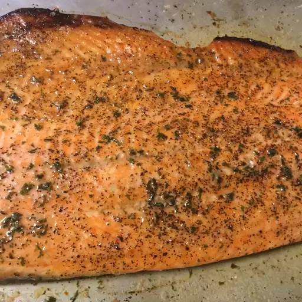

Easy Trout

An easy weeknight seafood dinner.
Ingredients
- ¼ cup butter
- 2 (8 ounce) whole trout, butterflied and deboned
- salt and freshly ground black pepper to taste
- 2 tablespoons freshly squeezed lemon juice
- 2 tablespoons chopped fresh flat-leaf parsley
Steps
- Melt butter in a saucepan over medium-low heat
until butter smells toasted and is golden brown,
about 1 minute. Turn off heat.
- Line a baking sheet with a piece of aluminum
foil. Place trout onto foil; open trout so
skin sides are down. Drizzle each trout with
about 1/2 teaspoon melted butter.
Generously season with salt and black
pepper.
- Move an oven rack to 5 or 6 inches
below the heat source and preheat the
oven's broiler on high heat.
- Broil trout until opaque and barely firm to
the touch, 2 or 3 minutes. Remove from oven.
- Return pan of remaining melted butter over
high heat; stir in lemon juice and parsley.
Bring butter sauce to a boil; whisk to
combine. Serve trout on plates and drizzle
with butter sauce.